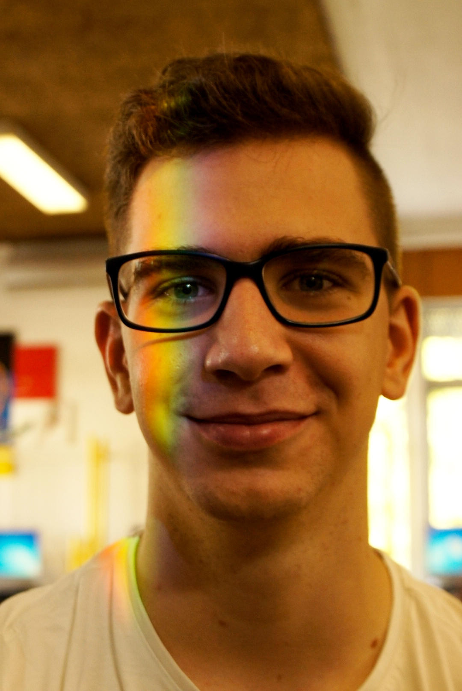
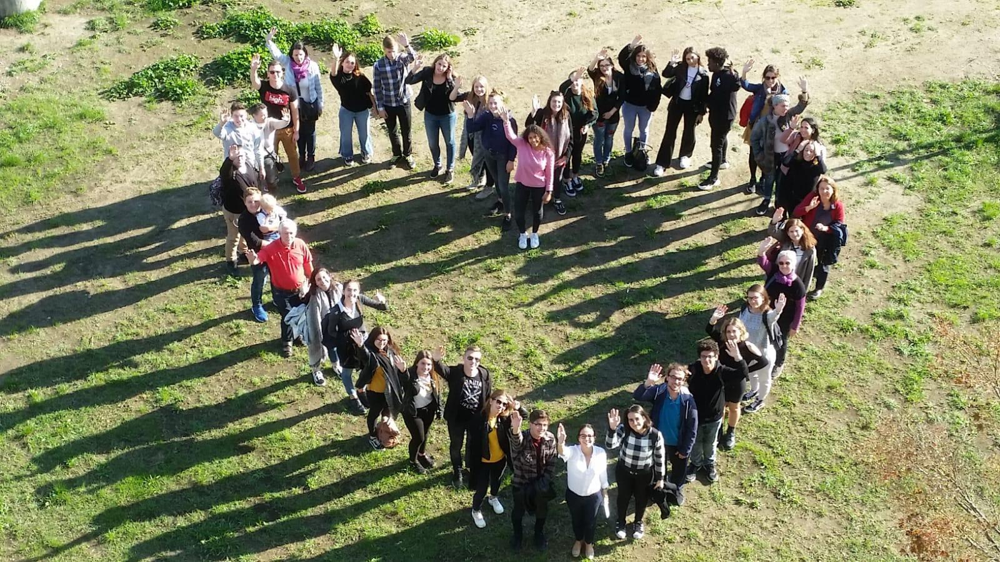
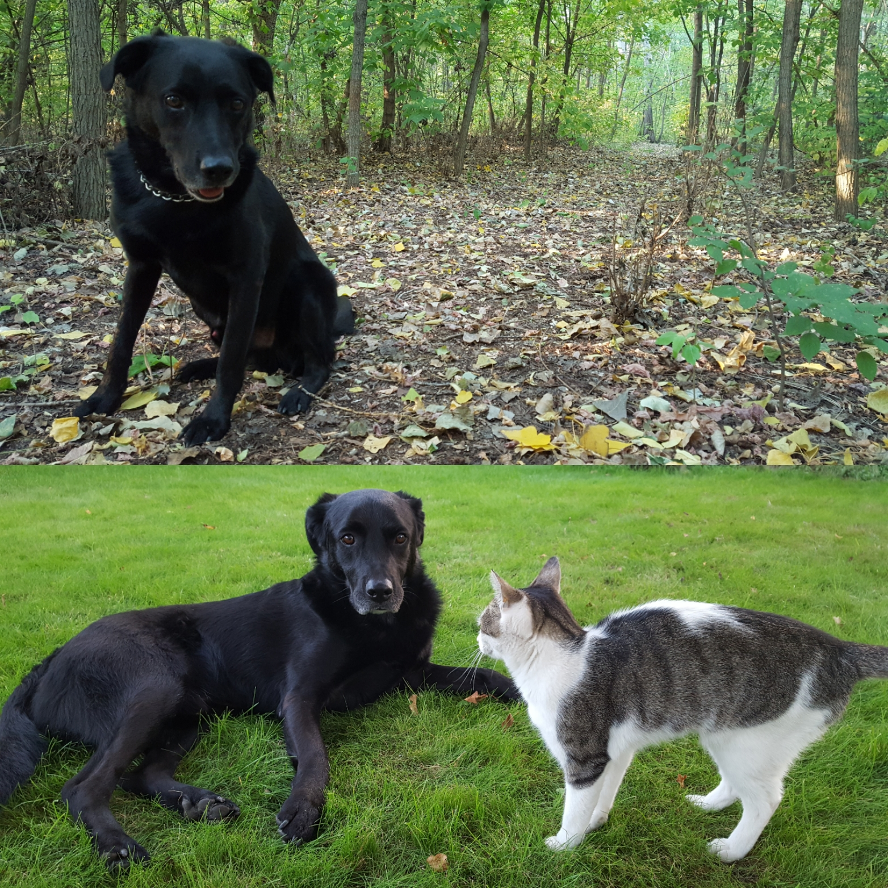
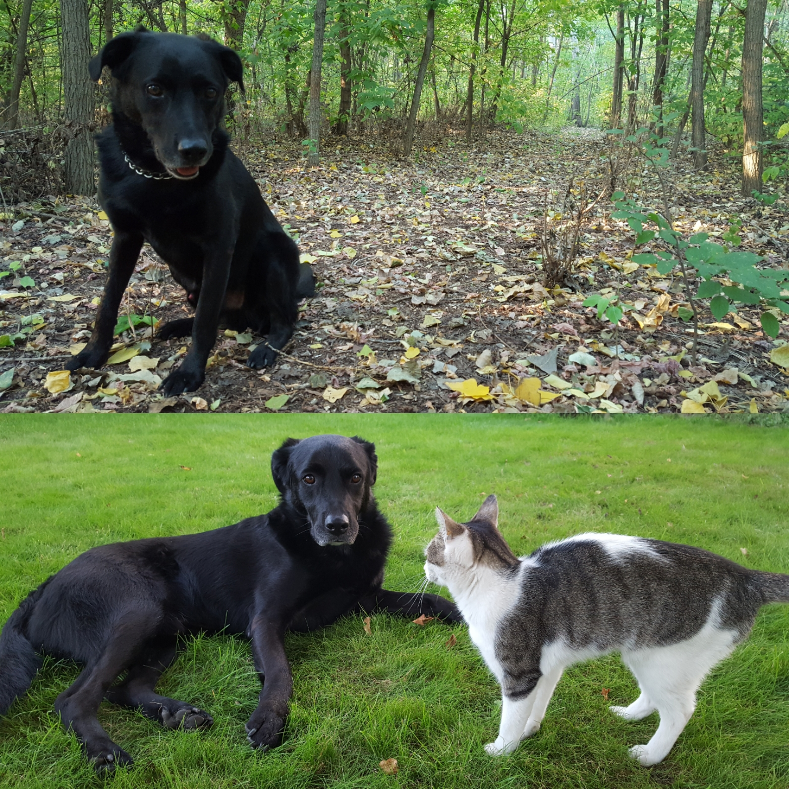

Józsa Dániel vagyok, a Budapesti Műszaki- és Gazdaságtudományi Egyetem első éves gépészmérnök hallgatója. Már általános iskola óta tudom, hogy gépészmérnök szeretnék lenni, ezért szakgimnáziumba jelentkeztem, ahol a szakmai gyakorlataimat külföldön végeztem, remélem a BME is sok újat tartogat a számomra.
- 
- 
A középiskolában is aktív tagja voltam a közösségnek, kétszer is részt vettem Erasmus+ projekten. Ezeken a projekteken középiskolás diákok dolgoznak együtt szerte európából az egy hetes konferenciákon, amelyeket mindig más országban rendeznek. A két projekt témája amelyen részt vettem az emigráció és az "Europe-Radio" volt.
Kecskeméten születtem, a város szélén kertvárosban nőttem fel, ezért a pesti zsúfoltságot nem kifejezetten szeretem. Állatbarát vagyok, van három macskánk és két kutyánk, egy labrador-németjuhász keverék és egy amerikai staffordshire terrier.
 
